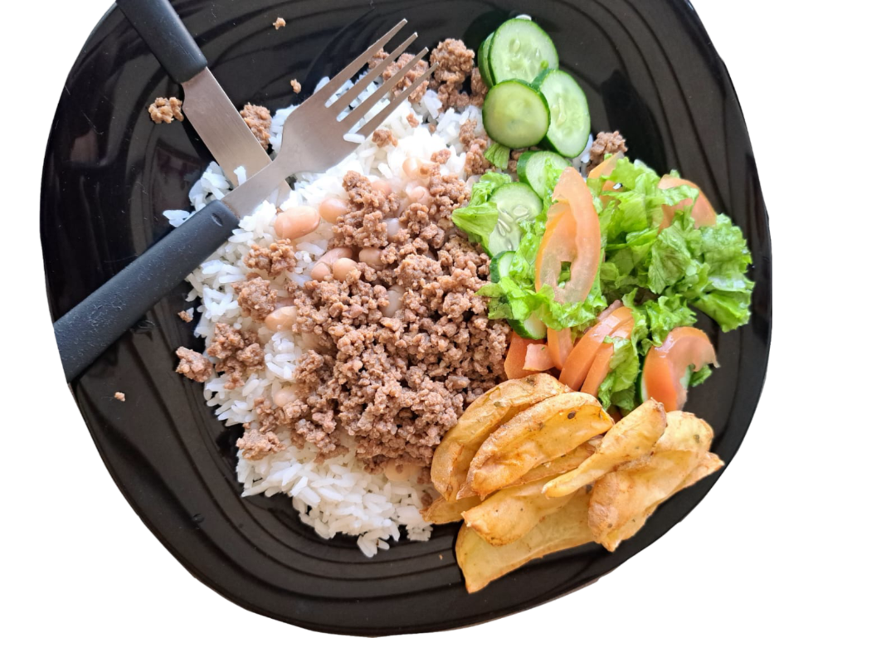

A produção de alimentos no campo é fundamental para a sustentabilidade e a segurança alimentar das sociedades modernas. Responsável por fornecer a maior parte dos alimentos que consumimos diariamente, a agricultura desempenha um papel
vital na economia global, gerando empregos e impulsionando o desenvolvimento rural. Além disso, a produção agrícola sustentável é crucial para a preservação.

A transportação de alimentos do campo à cidade é essencial para garantir que os produtos cheguem frescos e de qualidade aos consumidores urbanos. O processo começa com a colheita, onde alimentos são cuidadosamente selecionados e imediatamente armazenados em condições controladas, muitas vezes em câmaras refrigeradas, para preservar sua frescura.
O transporte, geralmente realizado em caminhões refrigerados, precisa ser rápido e eficiente, minimizando o tempo de deslocamento e mantendo a temperatura adequada. Ao chegar na cidade, os alimentos são distribuídos para mercados, supermercados e outros pontos de venda.
Esse processo enfrenta desafios como variações climáticas, infraestrutura inadequada e altos custos logísticos. A eficiência na transportação é crucial para reduzir perdas e garantir a segurança alimentar, contribuindo para uma cadeia de suprimentos eficaz e sustentável.